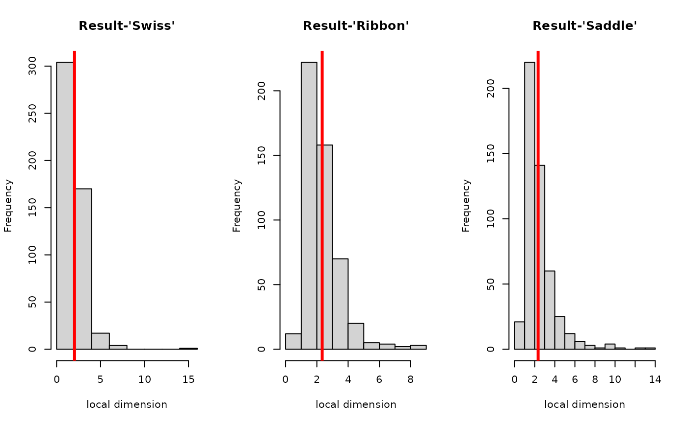

R/estimate_gdistnn.R
estimate_gdistnn.RdAs the name suggests, this function assumes that the data is sampled from the manifold in that graph representing the underlying manifold is first estimated via \(k\)-nn. Then graph distance is employed as an approximation of geodesic distance to locally estimate intrinsic dimension.
est.gdistnn(X, k = 5, k1 = 3, k2 = 10)| X | an \((n\times p)\) matrix or data frame whose rows are observations. |
|---|---|
| k | the neighborhood size used for constructing a graph. We suggest it to be large enough to build a connected graph. |
| k1 | local neighborhood parameter (smaller radius) for graph distance. |
| k2 | local neighborhood parameter (larger radius) for graph distance. |
a named list containing containing
the global estimated dimension, which is averaged local dimension.
a length-\(n\) vector of locally estimated dimension at each point.
He J, Ding L, Jiang L, Li Z, Hu Q (2014). “Intrinsic Dimensionality Estimation Based on Manifold Assumption.” Journal of Visual Communication and Image Representation, 25(5), 740--747.
Kisung You
# \donttest{
## create 3 datasets of intrinsic dimension 2.
X1 = aux.gensamples(dname="swiss")
X2 = aux.gensamples(dname="ribbon")
X3 = aux.gensamples(dname="saddle")
## acquire an estimate for intrinsic dimension
out1 = est.gdistnn(X1, k=10)
out2 = est.gdistnn(X2, k=10)
out3 = est.gdistnn(X3, k=10)
## print the results
sprintf("* est.gdistnn : estimated dimension for 'swiss' data is %.2f.",out1$estdim)
#> [1] "* est.gdistnn : estimated dimension for 'swiss' data is 2.04."
sprintf("* est.gdistnn : estimated dimension for 'ribbon' data is %.2f.",out2$estdim)
#> [1] "* est.gdistnn : estimated dimension for 'ribbon' data is 2.34."
sprintf("* est.gdistnn : estimated dimension for 'saddle' data is %.2f.",out3$estdim)
#> [1] "* est.gdistnn : estimated dimension for 'saddle' data is 2.46."
line1 = paste0("* est.gdistnn : 'swiss' estiamte is ",round(out1$estdim,2))
line2 = paste0("* est.gdistnn : 'ribbon' estiamte is ",round(out2$estdim,2))
line3 = paste0("* est.gdistnn : 'saddle' estiamte is ",round(out3$estdim,2))
cat(paste0(line1,"\n",line2,"\n",line3))
#> * est.gdistnn : 'swiss' estiamte is 2.04
#> * est.gdistnn : 'ribbon' estiamte is 2.34
#> * est.gdistnn : 'saddle' estiamte is 2.46
## compare with local-dimension estimate
opar <- par(no.readonly=TRUE)
par(mfrow=c(1,3))
hist(out1$estloc, main="Result-'Swiss'", xlab="local dimension")
abline(v=out1$estdim, lwd=3, col="red")
hist(out2$estloc, main="Result-'Ribbon'", xlab="local dimension")
abline(v=out2$estdim, lwd=3, col="red")
hist(out3$estloc, main="Result-'Saddle'", xlab="local dimension")
abline(v=out2$estdim, lwd=3, col="red")

par(opar)
# }